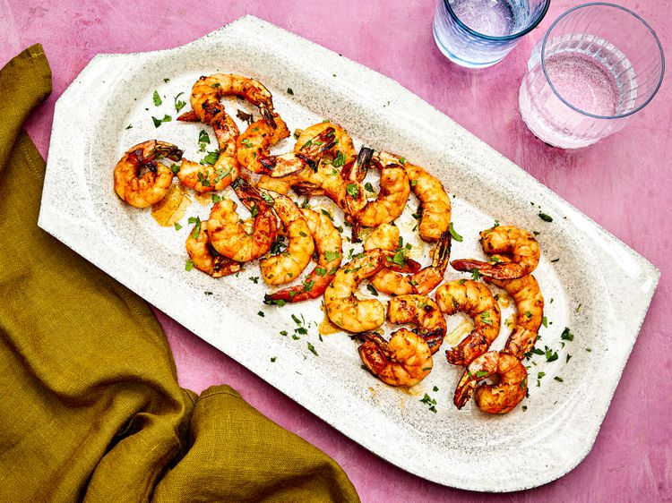

Home
Air-Fryer Shrimp

Description
Shrimp is delicious no matter how you prepare it, but for seafood that’s ready in less than five minutes,
give it a dry-brine and a quick toss in the air fryer.
Ingredients
- 12 ounces (340g) raw peeled and deveined jumbo (16/20) shrimp, tail on (see notes)
- 1/2 teaspoon Diamond Crystal kosher salt; for table salt, use half much by volume
- 1/4 teaspoon baking soda
- 1/4 teaspoon granulated sugar
- 1 tablespoon (14g) unsalted butter, melted (or neutral oil)
Steps
- Using paper towels, pat shrimp dry. In a medium bowl, toss shrimp with salt, baking soda,
and sugar until evenly coated. Arrange shrimp on a wire rack set over a rimmed baking sheet
and refrigerate, uncovered, for 20 to 30 minutes.
- Preheat a 6-quart air fryer to 400℉ (205ºC) for 5 minutes. Using paper towels, pat shrimp
dry again, transfer to a large bowl, and toss with melted butter to coat.
- Arrange shrimp in air fryer basket in a single layer, making sure shrimp are not
touching each other. Cook, undisturbed, until shrimp are cooked through and have just
turned opaque, about 4 minutes. Serve immediately.